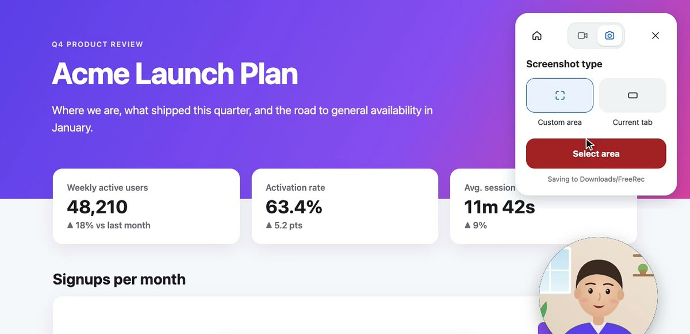
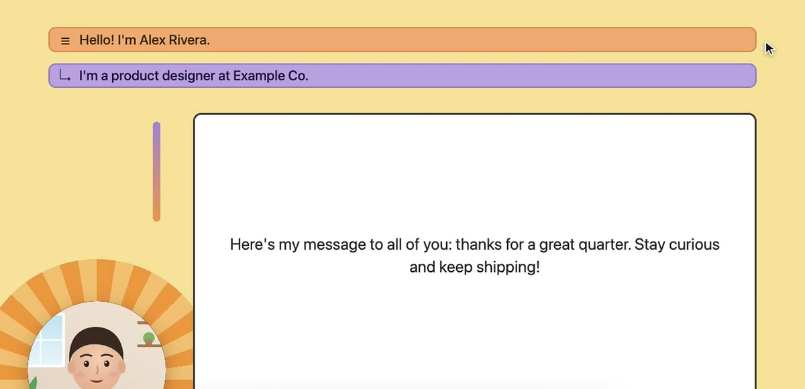

Everything you need to record
Free, with no limits, and it runs entirely on your computer.
Four capture modes
Full screen, a window, the current tab (no picker), or camera only.
Camera bubble
A round, draggable, resizable webcam overlay that's captured in the video.
On-device effects
Background blur, virtual backgrounds and 10 colour filters. Nothing leaves your machine.
Built-in canvas
A slide-like page with backgrounds, text layouts and six templates to present on.
Recording controls
3-2-1 countdown, then pause, resume, restart, discard and finish from a floating bar.
Screenshots
Capture a custom area or the whole visible tab as PNG.
Saves to your folder
Pick any folder once. Each recording streams into it as you record.
Proper video files
WebM (VP9/Opus) with a real, seekable duration. MP4 (H.264) where Chrome supports it.
A closer look
Clean controls that stay out of the way of what you're presenting.




Install in a minute
FreeRec isn't on the Chrome Web Store yet, so you load it as an unpacked extension. Requires Chrome 116 or newer.
- Download
freerec-<version>.zipfrom the latest release and unzip it somewhere permanent. - Open
chrome://extensionsand turn on Developer mode (top-right). - Click Load unpacked and select the
freerecfolder (the one withmanifest.json). - Pin FreeRec from the puzzle-piece menu, then click it or press
Alt+Shift+Oto start.
Private by design
Your recordings never touch a server.
Start recording for free
Open source under the MIT license. No limits, no catches.